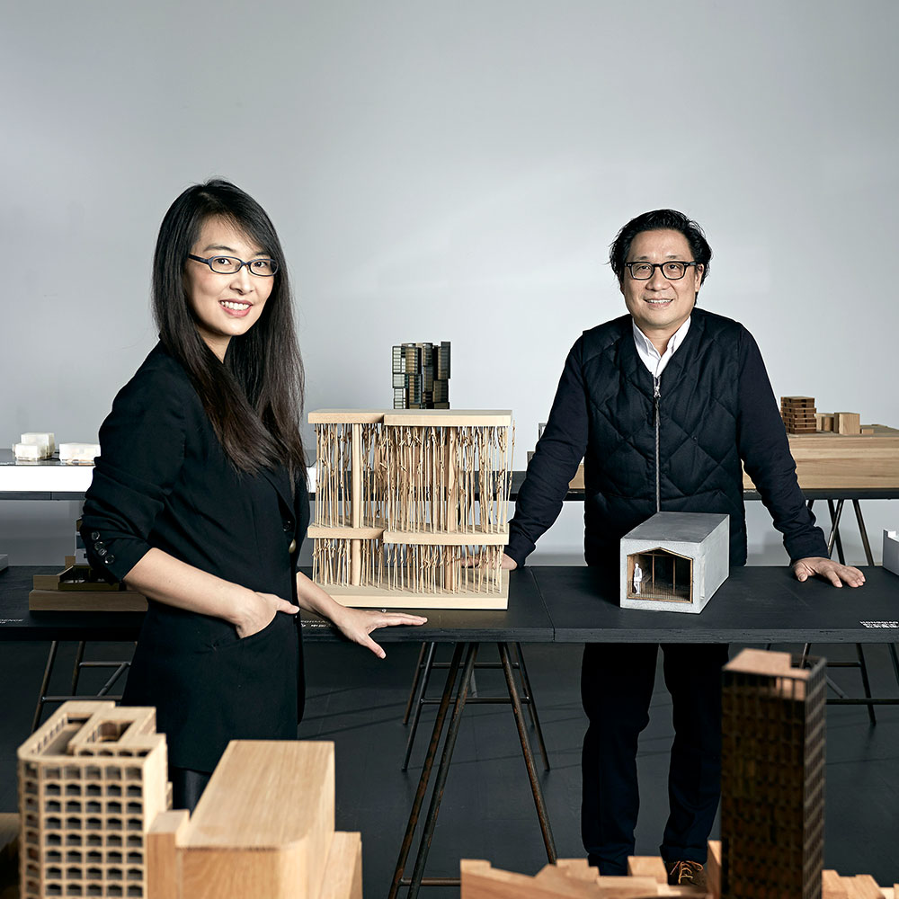

Neri & Hu Studio
Lyndon Neri es un reconocido diseñador industrial, arquitecto y
cofundador de Neri & Hu Design and Research Office, un estudio con
sede en Shanghái, China. Junto con su esposa y socia, Rossana Hu,
ha desarrollado un enfoque multidisciplinario que abarca arquitectura,
diseño de interiores, mobiliario y productos industriales.